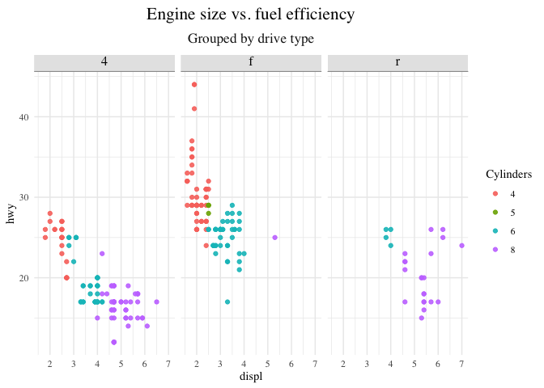
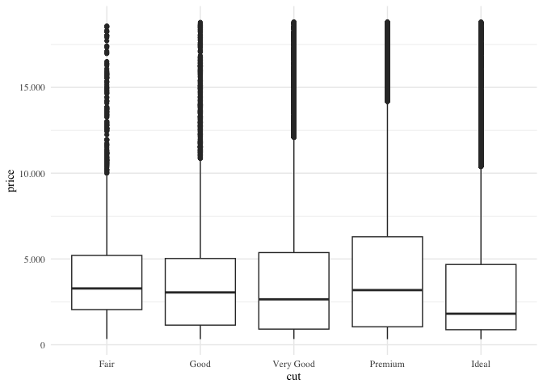

Personal R package with utility functions for data analysis and visualization.
Installation
# install.packages("pak")
pak::pak("pedersebastian/pederlib2")Functions
startup()
Loads tidyverse + readxl, sets ggplot2 geom defaults and applies theme_pedr() in one call.
Pass 2 to also load tidymodels core packages:
startup(2)
theme_pedr()
A clean ggplot2 theme based on theme_minimal, with centered titles, styled facet strips and optional font.
library(ggplot2)
ggplot(mpg, aes(displ, hwy, color = factor(cyl))) +
geom_point() +
facet_wrap(vars(drv)) +
labs(
title = "Engine size vs. fuel efficiency",
subtitle = "Grouped by drive type",
color = "Cylinders"
) +
theme_pedr(font_family = "serif")
komma()
Norwegian number formatting for ggplot2 scales — comma as decimal mark, period as thousands separator.
ggplot(diamonds, aes(cut, price)) +
geom_boxplot() +
scale_y_continuous(labels = komma()) +
theme_pedr(font_family = "serif")
list_locale()
Lists all locales available on the system.
head(list_locale(), 10)
#> [1] "af_ZA" "af_ZA.ISO8859-1" "af_ZA.ISO8859-15" "af_ZA.UTF-8"
#> [5] "am_ET" "am_ET.UTF-8" "ar_AE" "ar_AE.UTF-8"
#> [9] "ar_EG" "ar_EG.UTF-8"